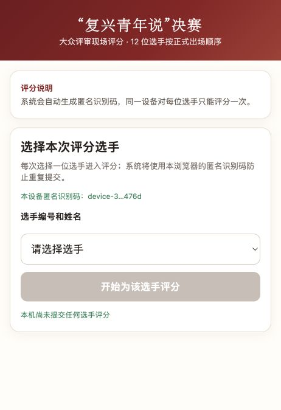
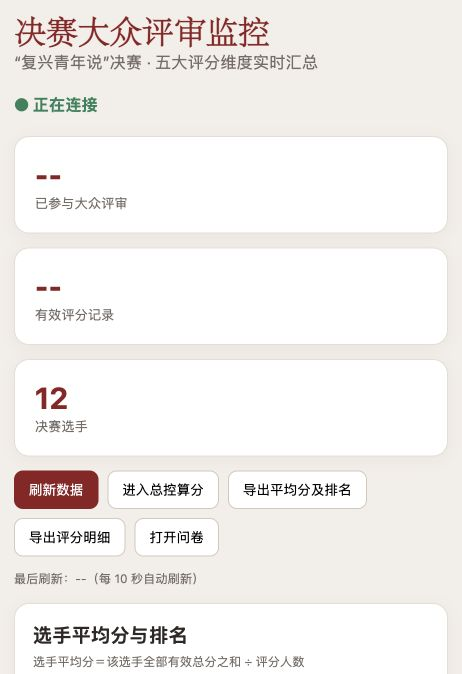
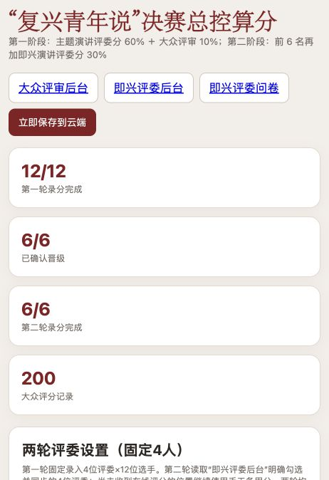
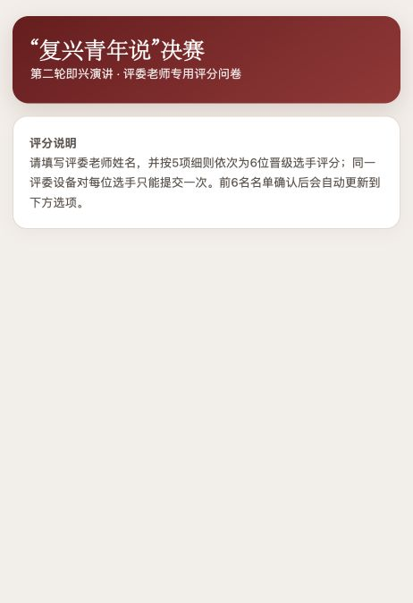
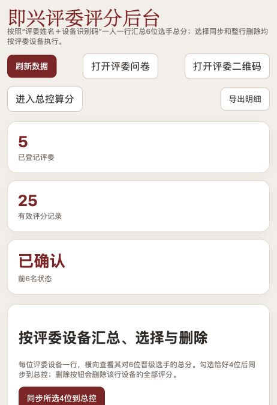

1 · 大众评审扫码问卷手机前端

输出：选手编号＋5项分数＋设备ID
触发：点击“确认提交”
界面截图 × 数据去向 × 同步时机（当前线上版本）

输出：选手编号＋5项分数＋设备ID
触发：点击“确认提交”
API：/submit · /status

刷新：页面每10秒自动／按钮立即
删除：按设备整行删除

一阶段：60% 评委＋10% 大众
终赛：一阶段＋30% 即兴评委
API：/calculation

名单：未开放时每5秒检查
提交：每位选手的5项分数＋总分
API：/judge-submit · /judge-status

勾选：评委姓名＋设备ID一行
同步：点击“同步所4位到总控”
综合分＝第一轮均分×60% ＋ 大众均分×10% ＋ 即兴均分×30%
同分先比即兴分；仍同分则提示评委会裁定。